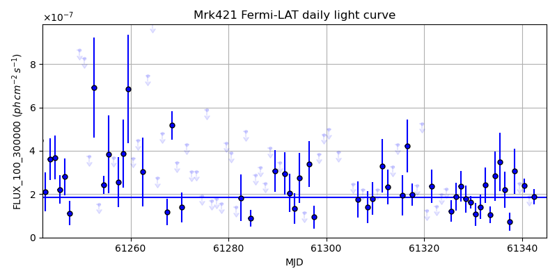
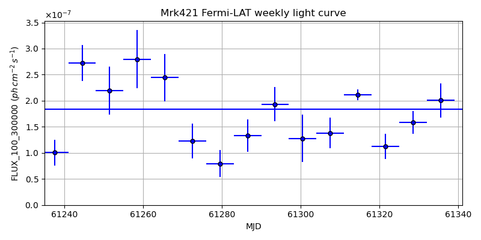
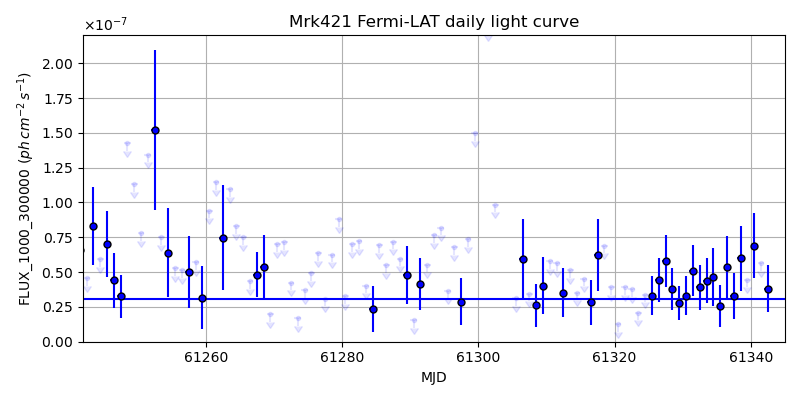
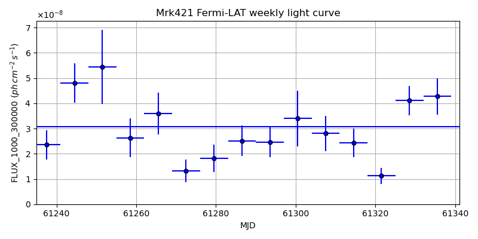

LAT Lightcurve site: https://fermi.gsfc.nasa.gov/ssc/data/access/lat/msl_lc/source/Mrk_421
NED: Query
Time of last update of this page: UT: 2026-10-30 15:22 (MJD: 61343.641)
| Property | Value |
|---|---|
| R.A. | 11:04:27.36 |
| Dec. | 38:12:32.4 |
| z | 0.030 |
| 3FGL SpectrumType | PowerLaw |
| 3FGL PL Index | 1.77 |
| 3FGL Flux_100_300000 | 1.84e-07 1 / (s cm2) |
| 3FGL Flux_1000_300000 | 3.08e-08 1 / (s cm2) |
| 3FGL Flux >200 GeV | 5.07e-10 1 / (s cm2) |
| 3FGL Extrap. Crab >200 GeV | 2.15 |
| 3FGL Flux After EBL Absorption >200GeV | 4.19e-10 1 / (s cm2) |
| 3FGL EBL Crab Fraction >200GeV | 1.78 |

| MJD | dMJD | Flux | dFlux | Frac3FGL | FracCrab>200GeV | EBLFracCrab>200GeV |
|---|---|---|---|---|---|---|
| 61338.50 | 0.50 | 3.05e-07 | 1.05e-07 | 1.66 | 3.63 | 3.00 |
| 61339.50 | 0.50 | 2.50e-07 | 0.00e+00 | 0.00 | 0.00 | 0.00 |
| 61340.50 | 0.50 | 2.39e-07 | 3.11e-08 | 1.30 | 2.84 | 2.35 |
| 61341.50 | 0.50 | 1.89e-07 | 0.00e+00 | 0.00 | 0.00 | 0.00 |
| 61342.50 | 0.50 | 1.88e-07 | 3.42e-08 | 1.02 | 2.23 | 1.84 |

| MJD | dMJD | Flux | dFlux | Frac3FGL | FracCrab>200GeV | EBLFracCrab>200GeV |
|---|---|---|---|---|---|---|
| 61307.50 | 3.50 | 1.38e-07 | 2.91e-08 | 0.75 | 1.64 | 1.36 |
| 61314.50 | 3.50 | 2.12e-07 | 1.06e-08 | 1.15 | 2.51 | 2.08 |
| 61321.50 | 3.50 | 1.12e-07 | 2.40e-08 | 0.61 | 1.33 | 1.10 |
| 61328.50 | 3.50 | 1.59e-07 | 2.17e-08 | 0.86 | 1.88 | 1.55 |
| 61335.50 | 3.50 | 2.01e-07 | 3.24e-08 | 1.09 | 2.38 | 1.97 |

| MJD | dMJD | Flux | dFlux | Frac3FGL | FracCrab>200GeV | EBLFracCrab>200GeV |
|---|---|---|---|---|---|---|
| 61338.50 | 0.50 | 6.00e-08 | 2.32e-08 | 1.95 | 4.25 | 3.51 |
| 61339.50 | 0.50 | 4.45e-08 | 0.00e+00 | 0.00 | 0.00 | 0.00 |
| 61340.50 | 0.50 | 6.88e-08 | 2.34e-08 | 2.24 | 4.88 | 4.03 |
| 61341.50 | 0.50 | 5.63e-08 | 0.00e+00 | 0.00 | 0.00 | 0.00 |
| 61342.50 | 0.50 | 3.81e-08 | 1.71e-08 | 1.24 | 2.70 | 2.23 |

| MJD | dMJD | Flux | dFlux | Frac3FGL | FracCrab>200GeV | EBLFracCrab>200GeV |
|---|---|---|---|---|---|---|
| 61307.50 | 3.50 | 2.80e-08 | 6.98e-09 | 0.91 | 1.99 | 1.65 |
| 61314.50 | 3.50 | 2.43e-08 | 5.72e-09 | 0.79 | 1.72 | 1.42 |
| 61321.50 | 3.50 | 1.12e-08 | 3.27e-09 | 0.36 | 0.80 | 0.66 |
| 61328.50 | 3.50 | 4.11e-08 | 5.76e-09 | 1.34 | 2.91 | 2.41 |
| 61335.50 | 3.50 | 4.27e-08 | 7.22e-09 | 1.39 | 3.03 | 2.50 |
--------------------------------------------------------- Using user-supplied coords: 11:04:27.36 38:12:32.4 2000 --------------------------------------------------------- FLWO UT night of: 2026-10-31 Local Sid. @ Midnight: 02:14 Sunset (-15.0) (local, UT): 18:44 01:44 Sunrise (-15.0) (local, UT): 05:31 12:31 Moonrise (local, UT): 21:49 04:49 Moonset (local, UT): Moon phase: 0.68 --------------------------------------------------------- AzTime LSID UT Obj_el Obj_az Mn_el Mn_az Sep. --------------------------------------------------------- 18:44 20:57 01:44 -14.1 334.5 -27.0 28.6 51.9 19:14 21:27 02:14 -16.6 340.1 -23.9 34.8 51.5 19:44 21:57 02:44 -18.5 345.9 -20.2 40.4 51.2 20:14 22:27 03:14 -19.7 352.1 -16.1 45.6 50.9 20:44 22:58 03:44 -20.2 358.3 -11.6 50.4 50.6 21:14 23:28 04:14 -20.1 4.7 -6.7 54.8 50.3 21:44 23:58 04:44 -19.2 10.9 -0.9 58.8 50.0 22:14 00:28 05:14 -17.7 16.9 3.8 62.5 49.8 22:44 00:58 05:44 -15.5 22.6 9.2 66.0 49.5 23:14 01:28 06:14 -12.8 28.1 14.8 69.3 49.2 23:44 01:58 06:44 -9.5 33.1 20.6 72.5 49.0 00:14 02:28 07:14 -5.6 37.7 26.5 75.5 48.8 00:44 02:58 07:44 -0.9 42.0 32.5 78.6 48.6 01:14 03:28 08:14 3.0 45.9 38.5 81.7 48.4 01:44 03:58 08:44 7.6 49.5 44.7 84.9 48.2 02:14 04:28 09:14 12.6 52.7 50.8 88.3 48.0 02:44 04:59 09:44 17.7 55.7 57.0 92.2 47.8 03:14 05:29 10:14 23.1 58.3 63.2 97.0 47.7 03:44 05:59 10:44 28.6 60.7 69.3 103.5 47.5 04:14 06:29 11:14 34.2 62.8 75.2 113.7 47.4 04:44 06:59 11:44 40.0 64.6 80.4 133.8 47.3 05:14 07:29 12:14 45.8 66.1 83.0 177.6 47.1 05:31 07:46 12:31 49.1 66.8 82.2 206.9 47.1 --------------------------------------------------------- Dark hours >55 deg.: 0.00